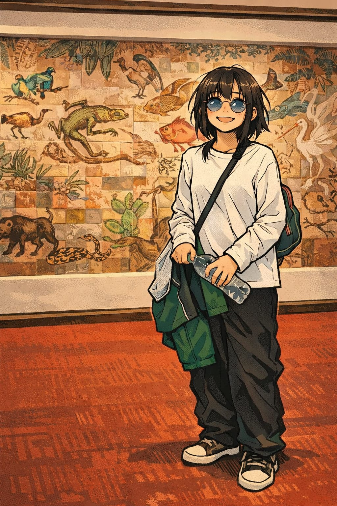

Sobre mí

soy estudiante de diseño grafico, tengo 16 años soy carismatica, cariñosa, me gusta la musica, me gusta dibujar, no me gustan las oreo, mi color favorito es el azul, mi numero favorito es el 4
Mis Trabajos
He ayudado en la feria de enfasis, en carteleras y pancartas, ha hecho afiches, logos, tarjetas de presentaciòn